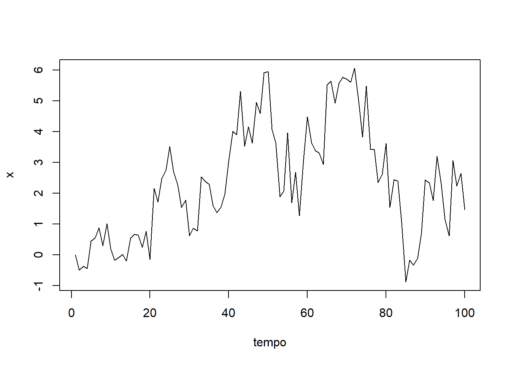
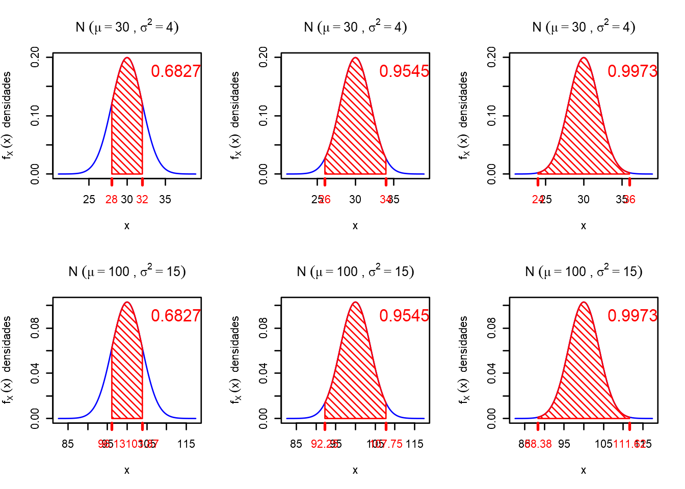
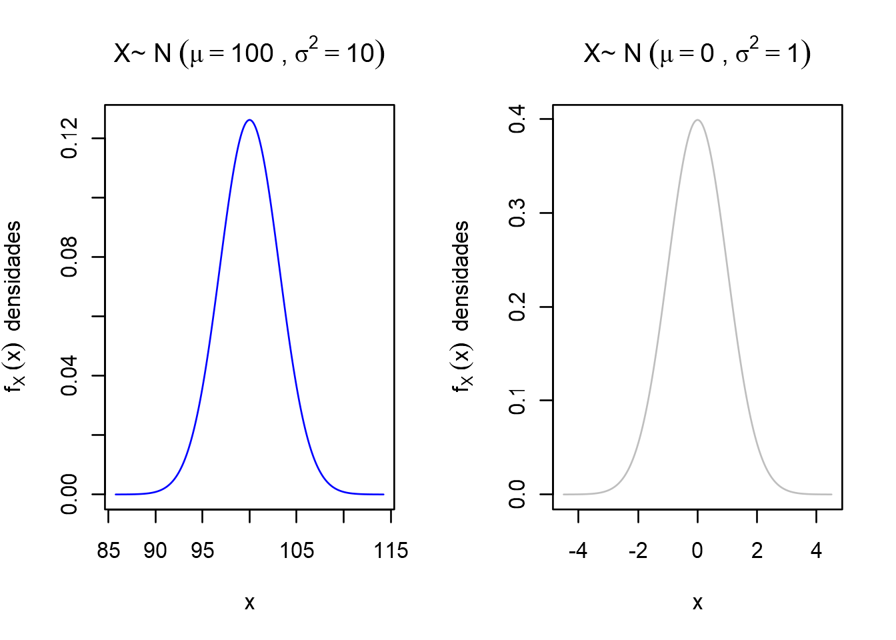

◉ Cadeias de Markov
Neste tópico vamos introduzir as cadeias de Markov, que são processos aleatórios que satisfazem a propriedade de
Markov. Nomeado por Andrey Markov, talvez o membro mais conhecido de uma família de famosos matemáticos russos do
final do século XIX ao início do século XX.
Um processo aleatório que satisfaz a propriedade Markov possui a seguinte característica interessante. Pode-se
fazer previsões em seu futuro com base somente em seu estado atual independentemente do que aconteceu no
passado até esse estado atual. Em outras palavras, condicional ao estado atual do processo, suas evoluções
futuras e passadas são independentes. Como tal, as cadeias de Markov são bastante gerais e desfrutam de uma
ampla gama De aplicações.
Nestes tópicos abordaremos as cadeias de Markov, uma classe geral de processo estocástico (aleatórios) com muitas
aplicações que lidam com a evolução de sistemas dinâmicos. Ao contrário dos processos de Bernoulli e Poisson, que
são sem memória, no sentido de que o futuro não depende do passado. Já as cadeias de Markov são mais elaboradas,
pois permitem alguma dependências entre diferentes períodos de tempo.
No entanto, essas dependências são de natureza simples e restrita, capturadas pela chamada propriedade de
Markov. Condicionada ao estado atual da cadeia de Markov, suas evoluções futuras e passadas são
independentes. Conforme mencionado na visão geral da unidade, consideramos apenas cadeias de Markov de tempo
discreto que evoluem em espaços de estados finitos. Isso nos permite concentrar-nos nos principais conceitos
sem ter que lidar com alguns detalhes técnicos necessários necessários para estudar os processos gerais de
Markov em tempo contínuo e espaços de estado gerais, possivelmente incontáveis.
Definição
Se tivermos uma sequência de variáveis aleatórias X1,X2,...Xn onde os índices 1,2,...,n
representar pontos sucessivos no tempo, podemos usar a regra da cadeia de probabilidade para calcular a
probabilidade de toda a sequência:
p(X1,X2,…Xn)=p(X1)⋅p(X2|X1)⋅p(X3|X2,X1)⋅…⋅p(Xn|Xn−1,Xn−2,…,X2,X1).
As cadeias de Markov simplificam essa expressão usando a suposição de Markov . A suposição é que, dado todo o
histórico anterior, a distribuição de probabilidade para a variável aleatória na próxima etapa de tempo depende
apenas da variável atual. Matematicamente, a suposição é escrita assim:
p(Xt+1|Xt,Xt−1,…,X2,X1)=p(Xt+1|Xt)
para todos t=2,...,n. Partindo desse pressuposto, podemos escrever a primeira expressão como
p(X1,X2,…Xn)=p(X1)⋅p(X2|X1)⋅p(X3|X2)⋅p(X4|X3)⋅…⋅p(Xn|Xn−1)
que é muito mais simples do que o original. Consiste em uma distribuição inicial para
a primeira variável, p(X1), e n−1 probabilidades de transição. Normalmente fazemos mais uma suposição:
que as probabilidades de transição não mudam com o tempo. Portanto,
a transição do tempot para o tempo t+1 depende apenas do valor de Xt.
Exemplos de cadeias de Markov
Cadeia discreta de Markov
Suponha que você tenha um número secreto (torne-o um inteiro) entre 1 e 5. Vamos chamá-lo de seu número inicial
na etapa 1. Agora, para cada etapa de tempo, seu número secreto mudará de acordo com as seguintes regras:
1- Jogue uma moeda.
2- • Se a moeda der cara, aumente o seu número secreto em um (5 aumenta para 1).
• Se a moeda der coroa, diminua seu número secreto em um (1 diminui para 5).
3- Repetir n vezes e registre a história em evolução de seu número secreto.
Antes do experimento, podemos pensar na sequência de números secretos como uma sequência de variáveis
aleatórias, cada uma assumindo um valor em {1,2,3,4,5}.
Suponha que a moeda seja justa, de modo que, a cada lance, a probabilidade de cara e coroa seja de 0.5.
Este jogo se qualifica como uma verdadeira cadeia de Markov? Suponha que seu número secreto seja atualmente
4 e que o histórico de seus números secretos seja (2,1,2,3).
Qual é a probabilidade de que, na próxima etapa, seu número secreto seja 5?
E quanto às outras quatro possibilidades? Por causa das regras deste jogo, a probabilidade da próxima
transição dependerá apenas do fato de que seu número atual é 4.
Os números mais antigos de seu histórico são irrelevantes, então esta é uma cadeia de Markov.
Este é um exemplo de uma cadeia de Markov discreta, onde os valores possíveis das variáveis aleatórias vêm de
um conjunto discreto. Esses valores possíveis (números secretos neste exemplo) são chamados de estados da
cadeia. Os estados geralmente são números, como neste exemplo, mas podem representar qualquer coisa. Em um
outro exemplo, os estados descrevem o clima em um determinado dia, que pode ser rotulado como 1 - bom, 2 - ruim.
Caminhada aleatória (random walk) - estado contínuo
Agora vamos dar uma olhada em um exemplo contínuo de uma cadeia de Markov. Dizer Xt=0
e temos o seguinte modelo de transição: p(Xt+1|Xt=xt)=N(xt,1).
Ou seja, a distribuição de probabilidade para o próximo estado é uma Normal com variância 1
e média (valor esperado) igual ao estado atual. Isso costuma ser chamado de “caminhada aleatória”. Claramente,
é uma cadeia de Markov porque a transição para o próximo estado Xt+1
só depende do estado atual Xt.
Este é exemplo simples para implementarmos em R:

Exemplo: estado contínuo
O exemplo do caminho aleatório contínuo que demos anteriormente não tem uma distribuição estacionária. No
entanto, podemos modificá-lo para que tenha uma distribuição estacionária.
Deixe a distribuição de transição ser p(Xt+1|Xt=xt)=N(ϕxt,1)Onde −1<ϕ<1. Ou seja, a distribuição de probabilidade
para o próximo estado é Normal com variância 1 e média igual a ϕ vezes o estado atual. Enquanto ϕ
está entre −1 e 1, então a distribuição estacionária existirá para este modelo.
Vamos simular esta cadeia para ϕ=−0.6

A distribuição estacionária teórica para esta cadeia é normal com média 0
e variância 1/(1−ϕ2), que em nosso exemplo é aproximadamente igual a 1.562. Vamos olhar um
histograma de nossa cadeia e compará-lo com a distribuição estacionária.

Parece que a cadeia atingiu a distribuição estacionária. Portanto, poderíamos tratar esta simulação da cadeia
como uma amostra de Monte Carlo da distribuição estacionária, uma normal com média 0
e variância 1.562.
Como a maioria das distribuições posteriores que veremos são contínuas, nossas simulações de Monte Carlo com
cadeias de Markov serão semelhantes a este exemplo.